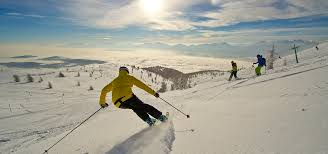

Síelés
A kezdőtől az újrakezdőig vagy a profi síelőkig mindenki megtalálja a magának valót, amikor karintiai síelésről van szó.
A változatosságot a hozzávetőlegesen 31 karintiai és kelet-tiroli sívidék, valamint a több mint 890 kilométernyi hóbiztos és tökéletesen karbantartott pálya szavatolja.
Síelés 24 sírégióban, több mint 800 kilométernyi sípályán
11 jó ok, hogy télen is ellátogassunk Karintiába
- Síelés
- A karintiai síiskolák
- Korcsolyázás befagyott tavakon
- Termálfürdők, fürdőházak és szaunák
- Hagyományőrzés: nem csak az adventről van szó!
- Mágikus pillanatok a természetben
- Túrázás a sívidékek között
- Amikor beköszönt az éjszaka Karintiában
- Újdonságra vágyik? Valami másra?
- Romantikus alpesi menedékházak és kóstoló a karintiai Alpok-Adria konyhából
- Téli Karintia-kártya
| Aktuális táboraink | |||
|---|---|---|---|
| Időpont | Tábor jellege | Helyszín | Iskola szünet |
| 2019.12.19-23. | Karácsonyi gyerektábor | Murau | nincs/téli szünet |
| 2019.12.29-01.02. | Szilveszteri tábor | Murau | téli szünet |
| 2020.01.03-06. | Sífutó tábor | Ramsau | nincs |
| 2020.01.11-16. | Ovis tábor | Lachtal | nincs |
Forrás: Síelés Karintiában